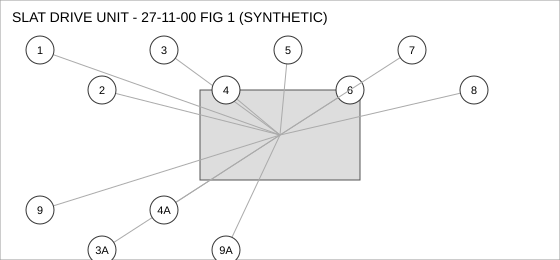
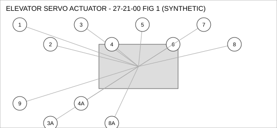
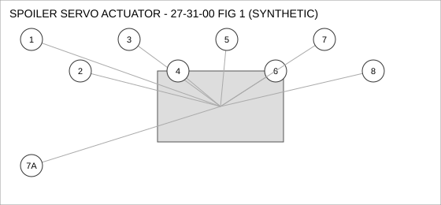

Document type: IPC | Revision: 15 | Fleet: A320
| CODE | AIRCRAFT |
|---|---|
| A | A320ceo |
| B | A320neo |
| C | A321neo |

| FIG ITEM | PART NUMBER | NOMENCLATURE | EFFECT | UPA |
|---|---|---|---|---|
| 1 | D27100783800 | FITTING - ELBOW, SLAT DRIVE UNIT | ALL | 1 |
| 2 | D24240355700 | VALVE - SHUTOFF, SLAT DRIVE UNIT | ALL | 4 |
| 3 | D20993265900 | SEAL - FLANGE, SLAT DRIVE UNIT | ALL | 1 |
| 3A | D21812014500 | SEAL - FLANGE, SLAT DRIVE UNIT | ALL | 1 |
| INTERCHANGEABLE WITH D20993265900 WHEN SB 27-2217 IS EMBODIED. | ||||
| 4 | D20646649900 | ACTUATOR - LINEAR, SLAT DRIVE UNIT | ALL | 1 |
| 4A | D26439377900 | ACTUATOR - LINEAR, SLAT DRIVE UNIT | C | 1 |
| ALTERNATE FOR D20646649900 ON A321NEO ONLY. | ||||
| 5 | D24200404700 | FILTER ELEMENT, SLAT DRIVE UNIT | ALL | 1 |
| 6 | D29619930900 | SENSOR - TEMPERATURE, SLAT DRIVE UNIT | ALL | 1 |
| 7 | D26773665600 | CLAMP - V-BAND, SLAT DRIVE UNIT | ALL | 1 |
| 8 | D28696424200 | SEAL - O-RING, SLAT DRIVE UNIT | B C | 1 |
| 9 | D20530972100 | COUPLING - QUICK DISCONNECT, SLAT DRIVE UNIT | B C | 4 |
| SUPERSEDED BY D24395992500 | ||||
| 9A | D24395992500 | COUPLING - QUICK DISCONNECT, SLAT DRIVE UNIT | B C | 4 |
| SUPERSEDES D20530972100. D20530972100 IS NOT INTERCHANGEABLE WITH THIS PART (ONE-WAY). | ||||

| FIG ITEM | PART NUMBER | NOMENCLATURE | EFFECT | UPA |
|---|---|---|---|---|
| 1 | D24072473400 | GASKET, ELEVATOR SERVO ACTUATOR | ALL | 1 |
| 2 | D22296590300 | VALVE - CHECK, ELEVATOR SERVO ACTUATOR | ALL | 1 |
| 3 | D24945966700 | SWITCH - PRESSURE, ELEVATOR SERVO ACTUATOR | A B | 1 |
| 3A | D22294370200 | SWITCH - PRESSURE, ELEVATOR SERVO ACTUATOR | A B | 1 |
| INTERCHANGEABLE WITH D24945966700 (TWO-WAY). | ||||
| 4 | D21673781200 | PUMP - TRANSFER, ELEVATOR SERVO ACTUATOR | A | 1 |
| 4A | D22112501600 | PUMP - TRANSFER, ELEVATOR SERVO ACTUATOR | A | 1 |
| ALTERNATE FOR D21673781200. PARTS ARE INTERCHANGEABLE. | ||||
| 5 | D25596149400 | NUT - SELF-LOCKING, ELEVATOR SERVO ACTUATOR | ALL | 1 |
| 6 | D28361244900 | COUPLING - QUICK DISCONNECT, ELEVATOR SERVO ACTUATOR | ALL | 1 |
| 7 | D26213014000 | HOSE ASSEMBLY, ELEVATOR SERVO ACTUATOR | ALL | 1 |
| 8 | D27345914500 | BOLT, ELEVATOR SERVO ACTUATOR | ALL | 4 |
| SUPERSEDED BY D29617791800 | ||||
| 8A | D29617791800 | BOLT, ELEVATOR SERVO ACTUATOR | ALL | 4 |
| REPLACES D27345914500. THIS PART MAY REPLACE D27345914500; D27345914500 MAY NOT BE USED TO REPLACE THIS PART. | ||||
| 9 | D29944362400 | DUCT - FLEXIBLE, ELEVATOR SERVO ACTUATOR | ALL | 2 |

| FIG ITEM | PART NUMBER | NOMENCLATURE | EFFECT | UPA |
|---|---|---|---|---|
| 1 | D27679265500 | COUPLING - QUICK DISCONNECT, SPOILER SERVO ACTUATOR | A | 2 |
| 2 | D27415357100 | SWITCH - PRESSURE, SPOILER SERVO ACTUATOR | ALL | 4 |
| 3 | D26175582200 | HOSE ASSEMBLY, SPOILER SERVO ACTUATOR | ALL | 2 |
| 4 | D23088231600 | SENSOR - PRESSURE, SPOILER SERVO ACTUATOR | C | 1 |
| 5 | D27361097300 | ACTUATOR - LINEAR, SPOILER SERVO ACTUATOR | ALL | 2 |
| 6 | D26316504000 | DUCT - FLEXIBLE, SPOILER SERVO ACTUATOR | ALL | 4 |
| 7 | D21091676300 | GASKET, SPOILER SERVO ACTUATOR | C | 1 |
| 7A | D27268470800 | GASKET, SPOILER SERVO ACTUATOR | C | 1 |
| INTERCHANGEABLE WITH D21091676300 (TWO-WAY). | ||||
| 8 | D22495564400 | SENSOR - TEMPERATURE, SPOILER SERVO ACTUATOR | C | 1 |